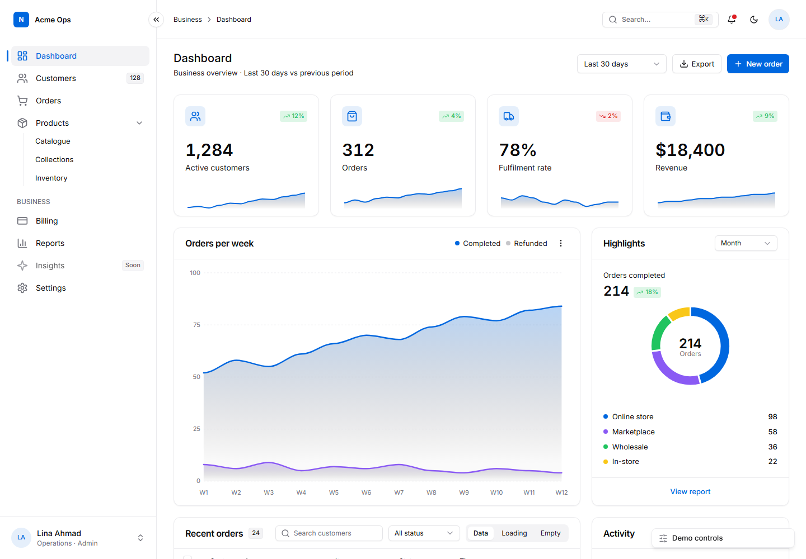

jbelly-ui — a UI design skill for AI agents
A licence-free UI system for dashboards, admin panels, settings and auth pages, data tables and landing pages. Exact tokens and recipes, a spec-driven page builder, a pre-flight that blocks the default-AI look, and a mandatory personality step so every product looks deliberately its own.

Install
npx skills add mohammadJohar/jbelly-ui -a claude-code # or -a cursor, -a codex, -a copilot, -a gemini-cli # no Node: ./install.sh cursor or .\install.ps1 -Agent cursor # rules-file tools: dist/AGENTS.md · chat-only tools: paste dist/jbelly-ui-prompt.md
What you get
Tokens and recipes
Semantic colour roles, one control scale (28/34/40px), 25 components with exact class strings, light and dark, RTL with one attribute.
Personality, not sameness
Eight dials and six presets; the agent must choose and write them down before any code, so two products never share a look.
Build from a spec
A 2 KB JSON spec becomes a complete page: nav, KPIs with sparklines, charts, table with loading, empty and error states, i18n.
Pre-flight judgement
A script catches AI tells (purple gradients, gradient text, Sparkles icons, filler copy), structure faults and WCAG contrast before you ship.
Cheap by design
A 1.2K-token quick card instead of 28K of references, one verification call, a 12-call budget: measured −51% tokens and −81% tool calls between versions.
Every agent, every stack
Skills-CLI agents, rules-file tools and chat-only tools from one source; plain CSS, Tailwind and React mappings; DTCG tokens for design tools.
Beta means: complete and measured on a few briefs with one model family; help test it on yours and report through the issue templates.